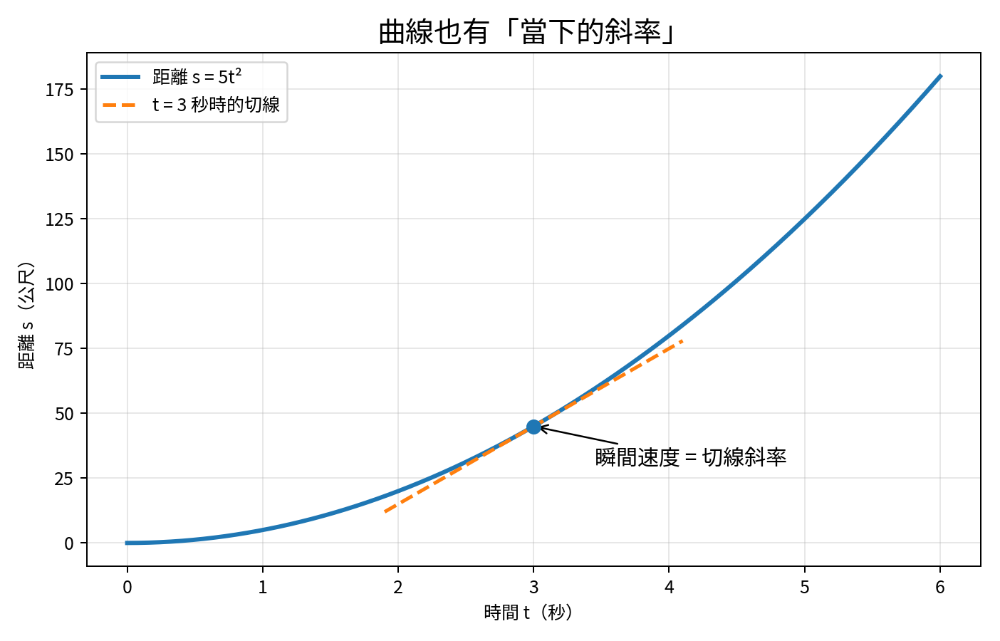
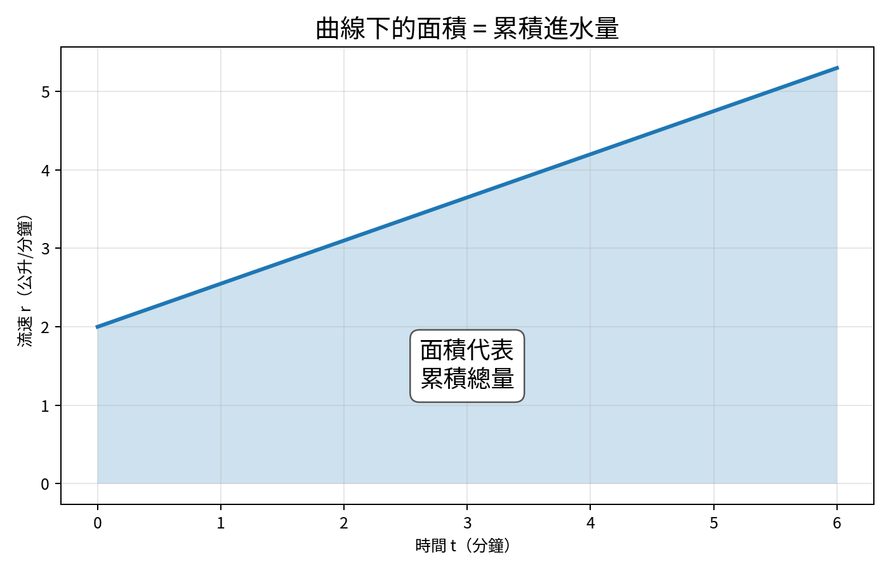
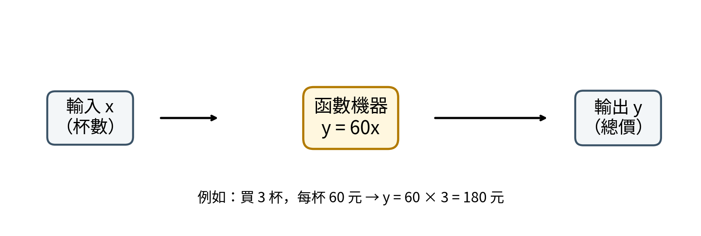
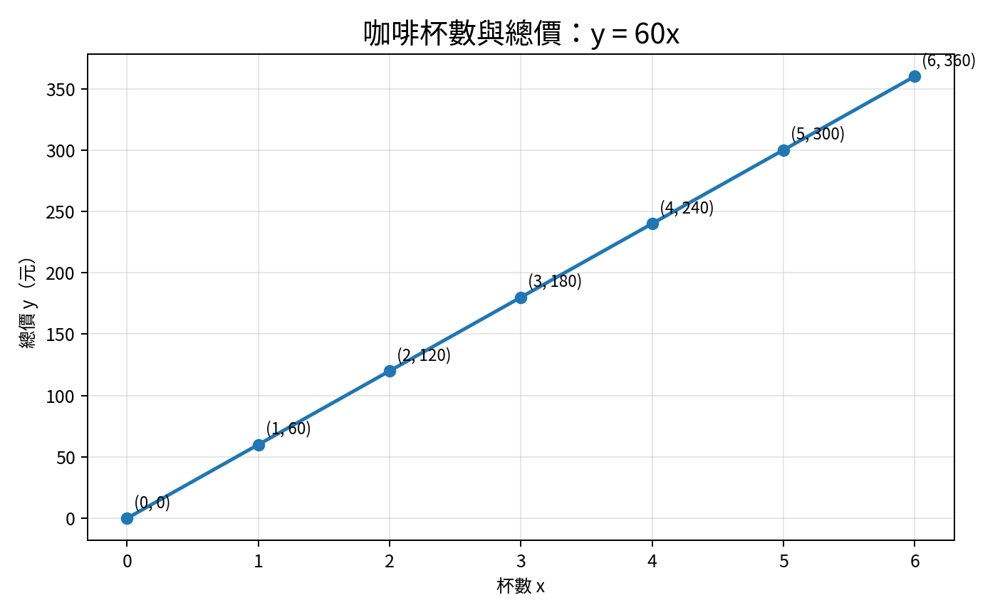
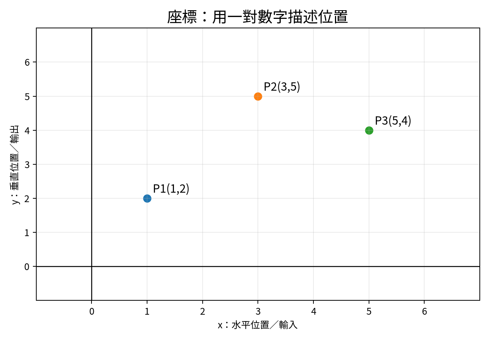
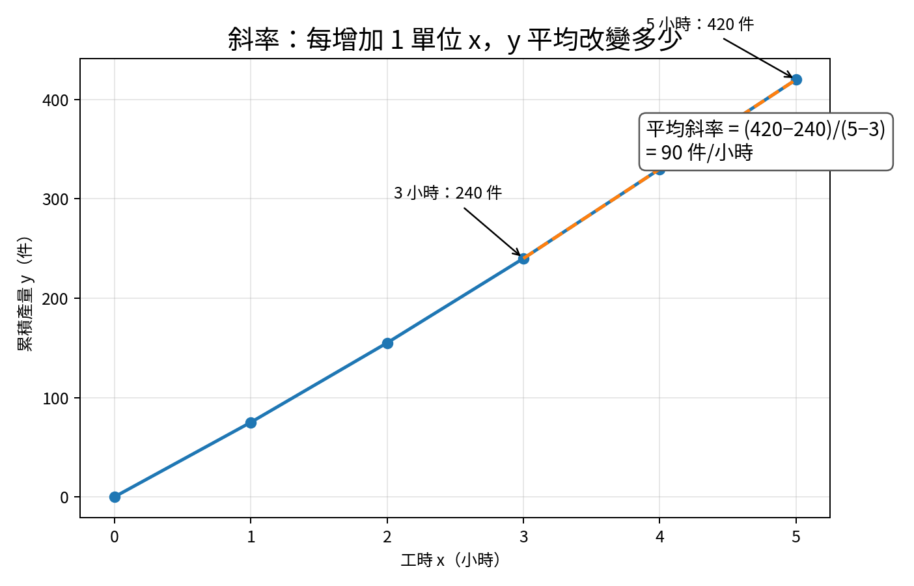

初級微積分：從零開始
第 0 冊｜學習地圖＋第 1 課：函數、圖形與斜率

用速度、產量、費用、水量等日常例子，逐步理解微積分。
| 這一冊完成後，你應該會： |
|---|
| 看懂 x、y、函數與座標圖；分辨輸入與輸出；用「變化量」理解斜率；知道微分在研究瞬間變化、積分在研究累積總量；完成第一組基礎練習。 |
適合：完全沒學過、以前學過但忘光、看到公式容易緊張的人
| 固定四步法 |
|---|
| ① 先講生活問題 → ② 看圖和表格 → ③ 再寫成公式 → ④ 做短練習確認真的懂。公式不是起點，而是把已經理解的事情寫得更精準。 |
每課約 30–45 分鐘；不追求一次背完，而是重複看懂。
每個新符號第一次出現時，都會說明它代表什麼。
計算錯誤不等於概念不懂；先分開檢查「想法」和「算術」。
每完成一課，用 5 題自我檢查；80% 正確再往下走。
遇到不懂時，回到圖、表格或生活情境，不直接硬背公式。
微積分主要處理兩種問題：
| 微分（Derivative） | 積分（Integral） |
|---|---|
| 問：「現在這一刻變得多快？」 例：車速表顯示的瞬間速度、某一刻的產能提升速度、成本對產量的敏感程度。 |
問：「一路累積起來共有多少？」 例：全天用電量、總行駛距離、整天進入水槽的水量、總生產件數。 |
| 核心圖像：曲線某一點的切線斜率。 | 核心圖像：曲線下方的面積。 |
微分預覽：切線斜率表示「當下變化率」。

積分預覽：曲線下方的面積表示「累積總量」。
| 單元 | 內容 | 學習目的 |
|---|---|---|
| 0. 數學工具箱 | 正負數、分數、次方、代數移項、座標。 | 先消除符號障礙 |
| 1. 函數與圖形 | 輸入、輸出、函數機器、直線、斜率。 | 看懂數量之間的關係 |
| 2. 極限 | 「越來越接近」是什麼；左右極限與連續。 | 建立微積分的語言 |
| 3. 微分直覺 | 平均速度如何變成瞬間速度；切線。 | 理解導數的本質 |
| 4. 微分規則 | 常數、次方、加減、乘法、除法、鏈鎖律。 | 能有效計算導數 |
| 5. 微分應用 | 最大最小、最佳化、邊際成本、變化率。 | 把導數用在決策 |
| 6. 積分直覺 | 小塊相加、黎曼和、面積與累積量。 | 理解積分的本質 |
| 7. 積分計算 | 反導數、基本公式、代換法。 | 能計算常見積分 |
| 8. 微積分基本定理 | 為什麼微分與積分互相抵消。 | 把兩大主題連起來 |
| 9. 綜合應用 | 距離、流量、面積、平均值、簡單商業問題。 | 能獨立解題 |
| 10. 總複習 | 概念圖、錯題整理、綜合測驗。 | 真正穩定掌握 |
| 建議進度 |
|---|
| 每週 3 課，每課 30–45 分鐘。大約 10–14 週可以完成初級微積分。速度可以放慢；真正理解比趕進度重要。 |
不用緊張，也不用先查答案。它只用來判斷哪些基礎要補。
1. 3 + 5 × 2 等於多少？
2. −4 + 7 等於多少？
3. 1/2 + 1/4 等於多少？
4. 若 2x = 10，x 是多少？
5. 若 y = 3x + 2，x = 4 時，y 是多少？
6. 點 (3, 5) 中，哪個數是 x？哪個數是 y？
7. 從 100 增加到 130，增加量是多少？增加百分比是多少？
8. 一條直線每向右 1 格就向上 4 格，它的斜率是多少？
| 判讀方式 |
|---|
| 答對 0–3 題：先從數學工具箱開始；答對 4–6 題：可直接學本冊，但遇到分數與移項時需補強；答對 7–8 題：可以快速進入極限。答案在本冊最後。 |
| 本課目標 |
|---|
| 能把生活中的「一個量影響另一個量」寫成函數；能讀懂座標圖；能計算兩點之間的平均斜率。 |
變數（variable）就是可能改變的數，通常用字母代表。最常用的是 x 和 y。
x 常代表輸入、原因或我們主動選擇的量。
y 常代表輸出、結果或受到 x 影響的量。
例：買幾杯咖啡是 x，總價是 y；工作幾小時是 x，累積產量是 y。
| 生活情境 | 輸入 x | 輸出 y |
|---|---|---|
| 買咖啡 | 杯數 | 總價 |
| 搭計程車 | 里程 | 車資 |
| 車縫生產 | 工時 | 累積件數 |
| 水槽進水 | 時間 | 水量 |
| 存款 | 月份 | 帳戶餘額 |
函數（function）可以想成一台機器：把 x 放進去，依照固定規則，得到唯一的 y。

| 最重要的觀念 |
|---|
| y = 60x 不是神祕公式。它只是在說：「總價 y 等於每杯 60 元乘上杯數 x。」字母只是暫時代替還不知道或可能改變的數。 |
| x：杯數 | 規則 y = 60x | 計算 | y：總價 |
|---|---|---|---|
| 0 | y = 60x | y = 60 × 0 | 0 元 |
| 1 | y = 60x | y = 60 × 1 | 60 元 |
| 2 | y = 60x | y = 60 × 2 | 120 元 |
| 3 | y = 60x | y = 60 × 3 | 180 元 |
| 5 | y = 60x | y = 60 × 5 | 300 元 |

把表格中的點畫出來，就得到函數圖形。

點 (3, 5) 表示：先從 x 軸走到 3，再向上到 y = 5。
括號內一定先寫 x，再寫 y。
函數圖形就是把很多組 (x, y) 點連起來，讓關係一眼可見。
| 讀圖技巧 |
|---|
| 先看橫軸代表什麼，再看縱軸代表什麼；接著觀察圖形是上升、下降、平坦，還是彎曲。不要一開始就急著算。 |
斜率（slope）是「垂直變化量 ÷ 水平變化量」，也就是：斜率 = y 的變化量 ÷ x 的變化量 = Δy / Δx
符號 Δ（讀作 delta）表示「變化量」。例如 Δy = 新的 y − 原來的 y。

先找兩個時間：3 小時與 5 小時。
計算產量變化：420 − 240 = 180 件。
計算時間變化：5 − 3 = 2 小時。
平均斜率：180 ÷ 2 = 90 件/小時。
| 斜率的單位很重要 |
|---|
| 因為斜率是「y 單位 ÷ x 單位」，所以本例是「件 ÷ 小時」，也就是每小時平均增加多少件。 |
兩個時間點之間可以算平均速度；但車速表顯示的是「現在這一刻」的速度。微分就是把兩點靠得越來越近，最後找出單一時刻的斜率。
| 先記住一句話 |
|---|
| 平均斜率看一段區間；導數（微分結果）看某一瞬間。下一階段學「極限」時，會說明兩點如何靠近到幾乎變成一點。 |
先自己做，再看解答。能說出理由比只寫答案更重要。
1. 一個便當 80 元。令 x = 便當數量，y = 總價。請寫出函數。
2. 使用上一題函數，x = 6 時，y 是多少？
3. 計程車起跳價 100 元，每公里加 20 元。令 x = 公里數，y = 車資。請寫出函數。
4. 在 y = 4x + 3 中，x = 5 時，y 是多少？
5. 點 (2, 7) 中，橫座標是多少？縱座標是多少？
6. 某工序 2 小時完成 150 件，6 小時完成 430 件。平均斜率是多少件/小時？
7. 水槽在 1 分鐘時有 12 公升，4 分鐘時有 30 公升。平均進水率是多少公升/分鐘？
8. 某圖形由左向右上升，通常表示 x 增加時 y 如何變化？
9. 某函數的斜率是 0，圖形大致是上升、下降，還是水平？
10. 請用一句自己的話說明：函數是什麼？斜率是什麼？
| 時間 x（小時） | 0 | 2 | 5 |
|---|---|---|---|
| 累積產量 y（件） | 0 | 180 | 510 |
11. 0 到 2 小時的平均產量是多少件/小時？
12. 2 到 5 小時的平均產量是多少件/小時？
13. 哪一段的平均產量較高？
1. 13。先乘除、後加減：5 × 2 = 10，3 + 10 = 13。
2. 3。從 −4 往右走 7 格到 3。
3. 3/4。1/2 = 2/4，所以 2/4 + 1/4 = 3/4。
4. x = 5。兩邊同除以 2。
5. y = 14。3 × 4 + 2 = 14。
6. x = 3，y = 5。座標永遠先 x 後 y。
7. 增加量 30；增加百分比 30/100 = 30%。
8. 斜率 4。向右 1、向上 4，所以 4 ÷ 1 = 4。
1. y = 80x。
2. y = 80 × 6 = 480 元。
3. y = 100 + 20x。起跳價是固定費用，所以即使 x = 0，也有 100 元。
4. y = 4 × 5 + 3 = 23。
5. 橫座標 x = 2；縱座標 y = 7。
6. (430 − 150) ÷ (6 − 2) = 280 ÷ 4 = 70 件/小時。
7. (30 − 12) ÷ (4 − 1) = 18 ÷ 3 = 6 公升/分鐘。
8. y 通常跟著增加。
9. 水平。因為 x 改變時，y 沒有改變。
10. 參考：函數是固定的輸入—輸出規則；斜率是 x 改變 1 單位時，y 平均改變多少。
11. 180 ÷ 2 = 90 件/小時。
12. (510 − 180) ÷ (5 − 2) = 330 ÷ 3 = 110 件/小時。
13. 2 到 5 小時較高，因為 110 > 90。
| 本課過關標準 |
|---|
| 不看答案時，能完成第 1–9 題至少 8 題；能自己解釋「函數」與「斜率」；看到一張圖時，會先說明橫軸與縱軸代表什麼。 |
下一課會從「0.9、0.99、0.999……到底在接近什麼？」開始，學會微積分最核心的語言：極限。接著再把平均斜率變成瞬間斜率。
← AC Admin